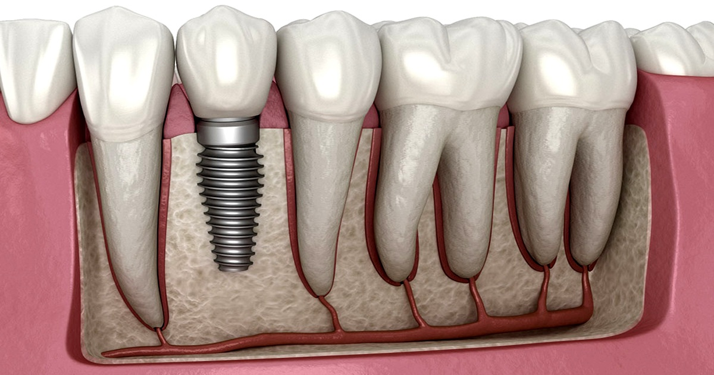

Implante unitário
O implante unitário é indicado para substituir um único dente perdido. Ele é composto por um pino de titânio que é inserido no osso maxilar, servindo como raiz para a coroa dentária.
Nossos principais implantes

O implante unitário é indicado para substituir um único dente perdido. Ele é composto por um pino de titânio que é inserido no osso maxilar, servindo como raiz para a coroa dentária.
O implante múltiplo é utilizado quando há a necessidade de substituir dois ou mais dentes perdidos. Ele permite a fixação de próteses parciais ou totais, proporcionando estabilidade e conforto ao paciente.
O implante All-on-4 é uma técnica avançada que permite a reabilitação completa da arcada dentária com apenas quatro implantes. Ele é indicado para pacientes que perderam todos os dentes e desejam uma solução fixa e duradoura.
Peça um orçamento do seu caso ou fale com a gente na página de contato.